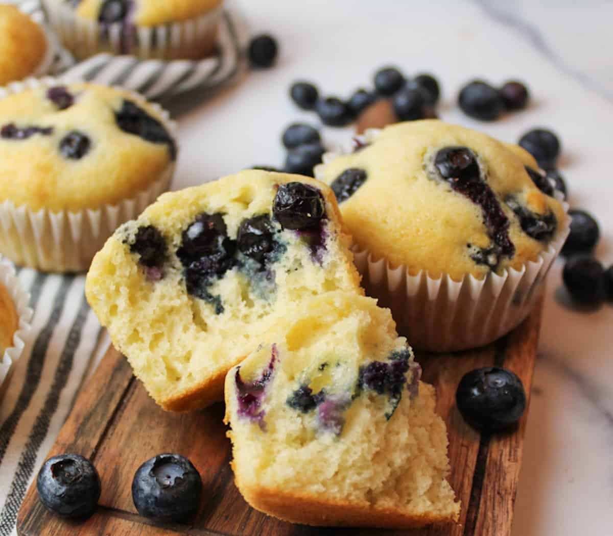
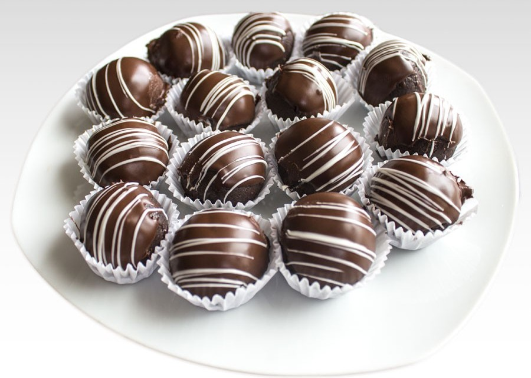
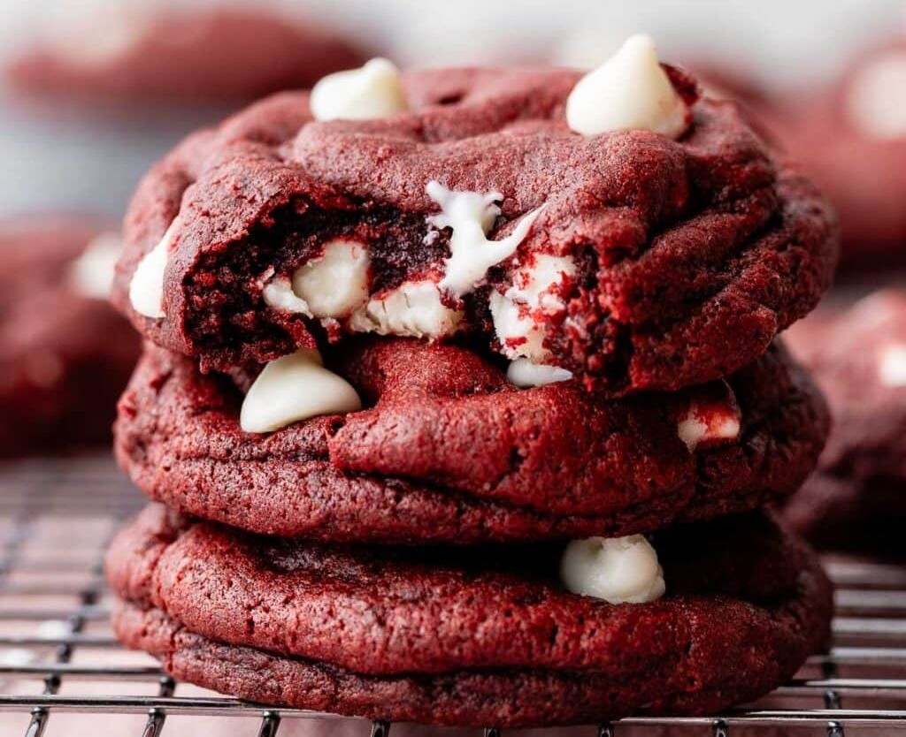

Muffins de Arandanos
Los muffins de arándanos son esponjosos, suaves y llenos de sabor frutal. Perfectos para el desayuno, la merienda o un snack dulce en cualquier momento del día. Su interior húmedo y sus arándanos jugosos hacen que cada bocado sea irresistible. Son fáciles de preparar y encantan tanto a grandes como a chicos.
- 1 taza (120 g) de harina leudante (o 1 taza de harina común + 1 cucharadita de polvo de hornear)
- 1/2 taza (100 g) de azúcar
- 1/4 cucharadita de sal
- 1/2 taza (120 ml) de leche
- 1/4 taza (60 ml) de aceite neutro (maíz, girasol o canola)
- 1 huevo grande
- 1 cucharadita de esencia de vainilla (opcional)
- 1/2 taza (70 g) de arándanos frescos o congelados
Precalentar el horno a 180 °C y preparar un molde para muffins con cápsulas de papel o ligeramente engrasado. En un recipiente grande, mezclar la harina, el azúcar y la sal. En otro bol, batir el huevo junto con la leche, el aceite y la esencia de vainilla hasta integrar bien. Incorporar la mezcla líquida a los ingredientes secos y unir suavemente con movimientos envolventes, sin sobremezclar para mantener la textura esponjosa. Agregar los arándanos e integrarlos con cuidado para evitar que se rompan demasiado. Distribuir la preparación en los moldes, llenándolos hasta tres cuartos de su capacidad. Hornear durante 18 a 22 minutos, o hasta que al insertar un palillo en el centro salga limpio. Retirar del horno y dejar enfriar unos minutos antes de desmoldar.

Trufas Bañadas en Chocolate
Estas trufas bañadas en chocolate son pequeñas delicias intensas y cremosas, ideales para una merienda especial o para acompañar un café después de la comida. Su interior suave contrasta con la cobertura firme de chocolate, creando una textura irresistible en cada bocado. Son fáciles de preparar, no requieren horno y quedan perfectas para regalar o compartir en reuniones.
- 200 g de galletitas dulces (tipo vainilla o chocolate)
- 100 g de queso crema o dulce de leche
- 2 cucharadas de cacao en polvo (opcional, si querés más intensidad)
- 1 cucharadita de esencia de vainilla
- 150 g de chocolate semiamargo o con leche para baño
- 1 cucharadita de aceite neutro (opcional, para dar brillo al chocolate)
Triturar las galletitas hasta obtener una textura fina y colocarlas en un bol. Agregar el queso crema o el dulce de leche, el cacao si se desea y la esencia de vainilla. Mezclar bien hasta formar una masa húmeda y moldeable. Tomar pequeñas porciones y formar bolitas del tamaño deseado, colocándolas sobre una bandeja. Llevarlas a la heladera durante al menos 30 minutos para que tomen firmeza. Mientras tanto, derretir el chocolate a baño María o en el microondas en intervalos cortos, mezclando para evitar que se queme; si se quiere un acabado más brillante, añadir una cucharadita de aceite neutro. Una vez firmes, sumergir las trufas en el chocolate derretido hasta cubrirlas por completo, retirarlas con ayuda de un tenedor y dejarlas reposar sobre papel manteca hasta que el baño se endurezca. Conservar en heladera hasta el momento de servir.

Coockies Red Velvet
Estas galletas Red Velvet combinan una textura suave y ligeramente masticable con un delicado sabor a cacao y vainilla. Su característico color rojo intenso y las chispas de chocolate blanco o semidulce las convierten en una opción llamativa y deliciosa para la merienda. Son perfectas para compartir, regalar o disfrutar recién horneadas con una taza de café o leche fría. Refrigerar la masa es clave para lograr una textura ideal y un mejor desarrollo del sabor.
- 1 y 2/3 tazas (210 g) de harina para todo uso
- 1/4 taza (21 g) de cacao en polvo natural sin azúcar
- 1 cucharadita de bicarbonato de sodio
- 1/4 cucharadita de sal
- 1/2 taza (113 g) de mantequilla sin sal, a temperatura ambiente
- 3/4 taza (150 g) de azúcar morena (clara u oscura)
- 1/4 taza (50 g) de azúcar granulada
- 1 huevo grande a temperatura ambiente
- 1 cucharada de leche (preferentemente suero de leche)
- 2 cucharaditas de extracto de vainilla
- 3/4 cucharadita de colorante rojo en gel (opcional)
- 1 taza (180 g) de chispas de chocolate blanco o semidulce
En un recipiente mediano mezclar la harina, el cacao en polvo, el bicarbonato y la sal, y reservar. En otro bol, batir la mantequilla junto con el azúcar morena y el azúcar granulada hasta obtener una mezcla cremosa y suave. Incorporar el huevo y el extracto de vainilla, batiendo hasta que todo quede bien integrado. Añadir los ingredientes secos a la mezcla húmeda, agregar la leche y el colorante rojo, y mezclar a velocidad baja hasta formar una masa homogénea y algo pegajosa. Integrar las chispas de chocolate con movimientos suaves.
Cubrir la masa y llevarla a la heladera durante al menos una hora para que tome firmeza. Luego, precalentar el horno a 177 °C y preparar bandejas con papel manteca o tapetes de silicona. Formar bolitas de masa del mismo tamaño y colocarlas sobre la bandeja, dejando espacio entre cada una. Hornear durante 11 a 13 minutos, hasta que los bordes se vean firmes y el centro aún ligeramente suave. Retirar del horno, dejar reposar unos minutos en la bandeja y luego trasladar a una rejilla para que se enfríen por completo. Conservar en un recipiente hermético a temperatura ambiente.

Torta Matcha
Esta tarta de matcha es un postre elegante y delicado que combina la intensidad ligeramente herbal del té verde con la suavidad dulce del chocolate blanco. Su textura tipo mousse, ligera y cremosa, contrasta con la base crocante de galleta, logrando un equilibrio perfecto de sabores y consistencias. Ideal para una merienda especial o como postre sofisticado para sorprender a tus invitados.
- 100 g de galletas tipo María
- 50 g de mantequilla derretida
- 200 g de nata líquida para montar
- 80 g de yogur griego
- 50 g de azúcar
- 105 g de leche
- 15 g de té matcha de buena calidad
- 6 g de gelatina en polvo
- 30 ml de agua
- 120 g de chocolate blanco
- 5 g de gelatina en polvo adicional
- 25 ml de agua adicional
Comenzar triturando las galletas hasta obtener una textura fina similar a arena y mezclarlas con la mantequilla derretida hasta formar una preparación húmeda. Presionar esta mezcla en el fondo de un molde desmontable de aproximadamente 17 cm, formando una base compacta y uniforme. Llevar al refrigerador durante al menos una hora para que se endurezca.
Mientras la base se enfría, preparar la primera capa. Hidratar la gelatina en el agua y dejar reposar unos minutos. Montar la nata junto con el azúcar hasta obtener una textura cremosa y aireada. Calentar la leche a fuego bajo, añadir el chocolate blanco troceado y remover hasta que se funda completamente. Incorporar la gelatina hidratada y mezclar hasta integrar, dejando templar unos minutos. Unir esta preparación con la nata montada mediante movimientos envolventes para no perder aire y verter cuidadosamente sobre la base fría. Refrigerar durante una hora para que tome consistencia.
Para la capa de matcha, hidratar la gelatina en el agua adicional y reservar. Montar nuevamente la nata con el azúcar hasta que esté firme y reservar. Calentar la leche y añadir el matcha previamente tamizado, mezclando bien para evitar grumos. Incorporar la gelatina hidratada y el yogur griego, removiendo hasta obtener una crema homogénea. Integrar esta mezcla con la nata montada con movimientos suaves y envolver hasta que quede uniforme. Verter sobre la capa ya firme de chocolate blanco y llevar al refrigerador durante varias horas o preferentemente toda la noche, hasta que la tarta esté completamente firme antes de desmoldar y servir.